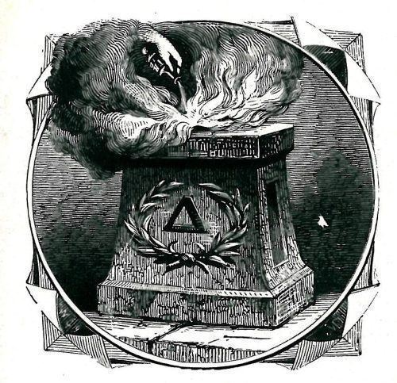
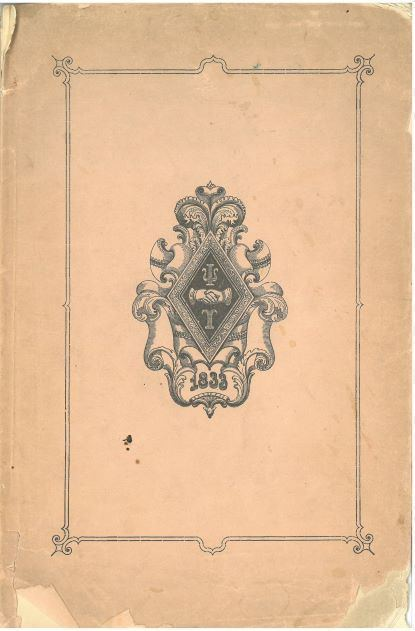
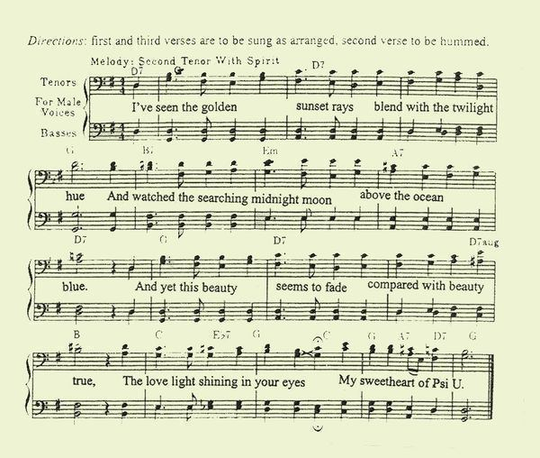
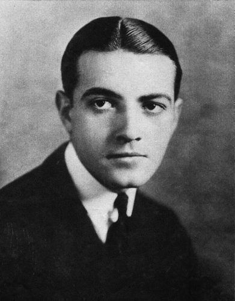
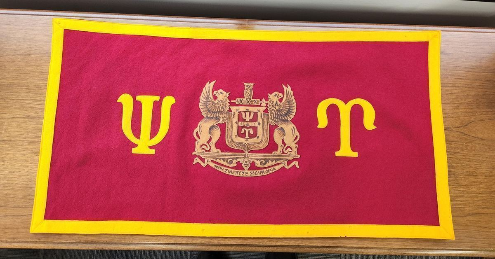
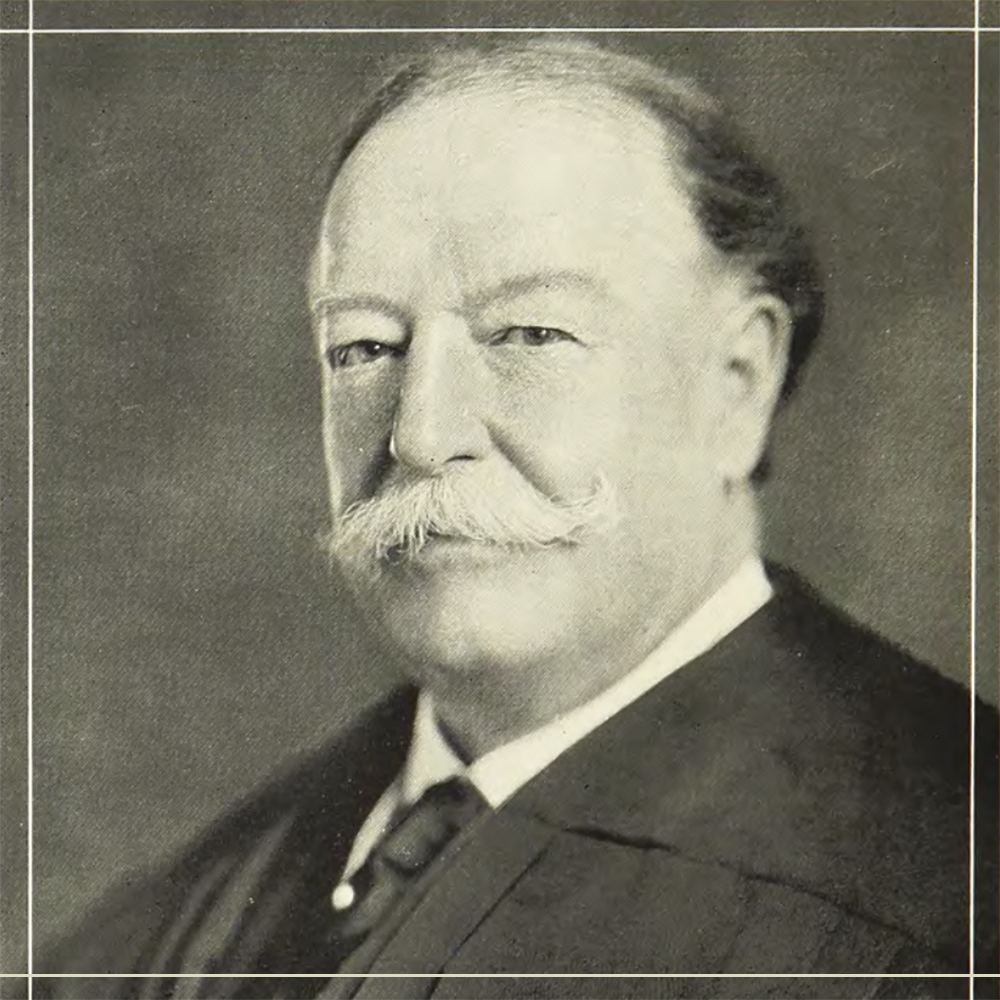
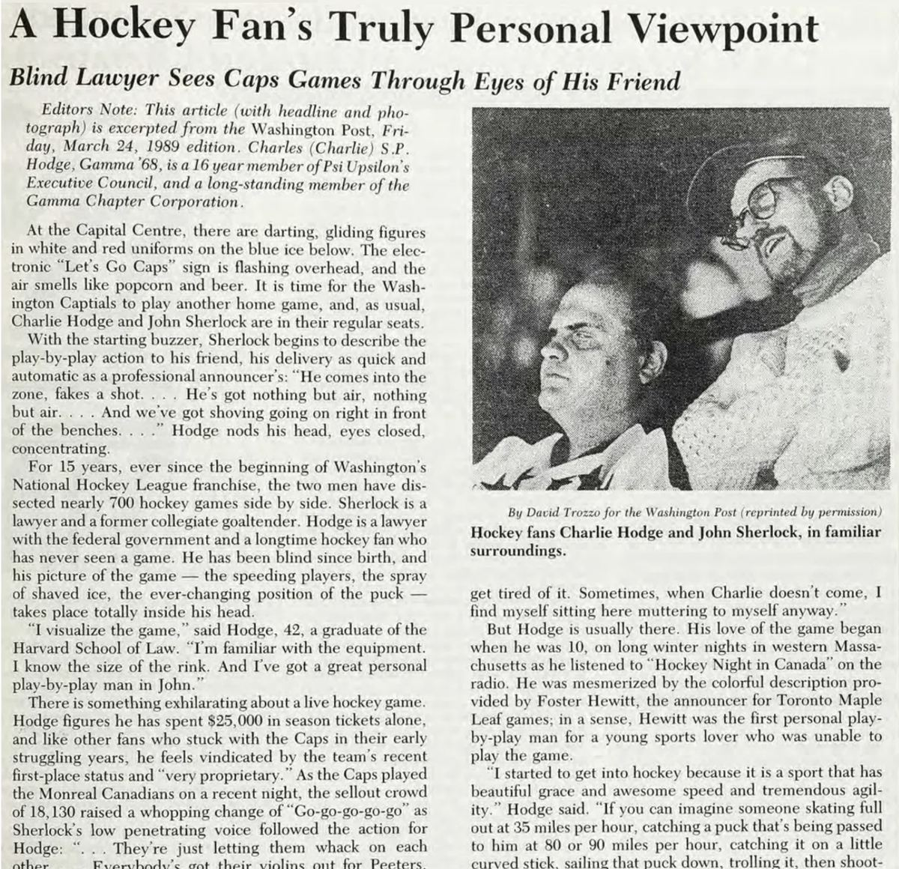

From the Archives
Stories out of the collection
Short pieces drawn from the material in these volumes — a founder's letter, a Convention special train, a brother who went to Hollywood. Originally published on psiu.org and gathered here beside the documents they came from.

About our founders: Sterling Goodale Hadley
Sterling Goodale Hadley - Theta 1836 (Union College) by Christopher Lawrence Tang ESQ, Gamma Tau '01 (Georgia Tech)…

The Founding of the Delta Chapter at NYU
The founding of the Delta Chapter at New York University is incredibly important for Psi Upsilon as it is the first branch of our fraternity from Union College, and in 18…

Martindale's 1898 address on the founding of Psi Upsilon
In 1898, Edward Martindale Theta 1836, a founder of Psi Upsilon, attended the 65th Psi Upsilon Convention in Minneapolis, MN on May 5th. He gave a remarkable keynote spee…

Psi Upsilon's First Convention in 1841
Psi Upsilon became the first fraternity to hold a Convention 180 years ago, on October 22, 1841, and started an important annual tradition that continues to exist today.…

Psi Upsilon's First Songbook
In 1853 Yale University printed "Songs of Yale", which is known as the oldest college songbook in the United States. But four years before that, also printed in New Haven…

Psi Upsilon Sweethearts
Recognizing one's partner has a long tradition in Fraternity and Sorority Life whether it be serenading, pinning or lavaliering. Most traditions would be specific to each…

The Ceremony of the Yule Log
The Delta Chapter at New York University has one of the oldest chapter traditions in all of Psi U: Its annual Yule Log event. Occurring on the first Monday of December, t…

"All Aboard for the Psi Upsilon Special"
Reprinted from an article in the August 1989 Diamond, by Tip Hinsdale, Xi '39.…

Psi U's Star of the Silent Film Era
Richard Barthelmess, Beta Beta 1917 (Trinity College) was a star of the silent film era and influential in Hollywood and helped build it to the institution it is today. H…

"Howlin' Mad" Howley, Delta '25 (NYU) and the occupation of Berlin
Larger than life, Col. Frank L. Howley was Deputy American Commandant when four-power cooperation broke down in Berlin. Soviet radio played cowboy music every time they m…

Alfred E. Driscoll, Delta Delta '25 Banner
We received a wonderful piece of memorabilia in the office last month. The granddaughter of Alfred E. Driscoll, Delta Delta '25 (Williams College), sent us this Psi Upsil…

Taft's 1929 Convention Address
A gallery of scanned pages from the collection.…

Psi U and the First NFL Draft
Jay Berwanger, Omega '36 (Chicago), has a storied football history with the Chicago Maroons where he earned the nickname "The One Man Team". While his position was offici…

A Hockey Fan's Point of View
The Diamond of Psi Upsilon Summer 1989 recounts this tale of Charlie S.P. Hodge, Gamma '68 (Amherst). Charlie served on the Executive Council of the Fraternity and was a …